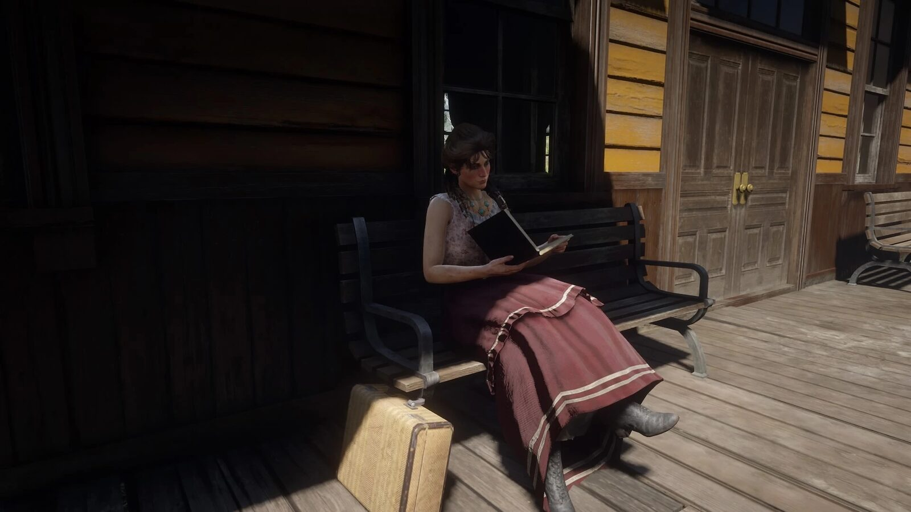
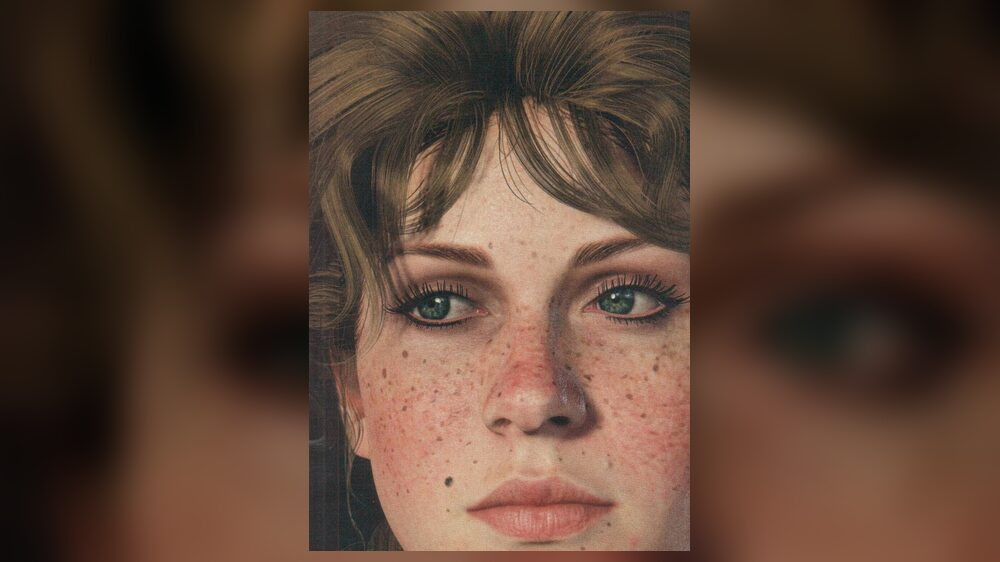
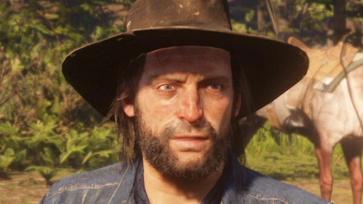
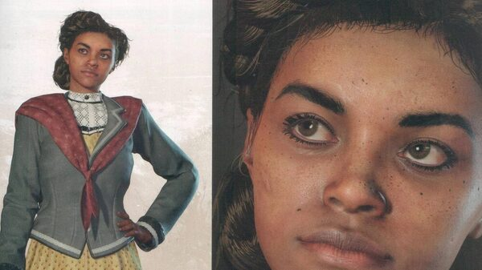
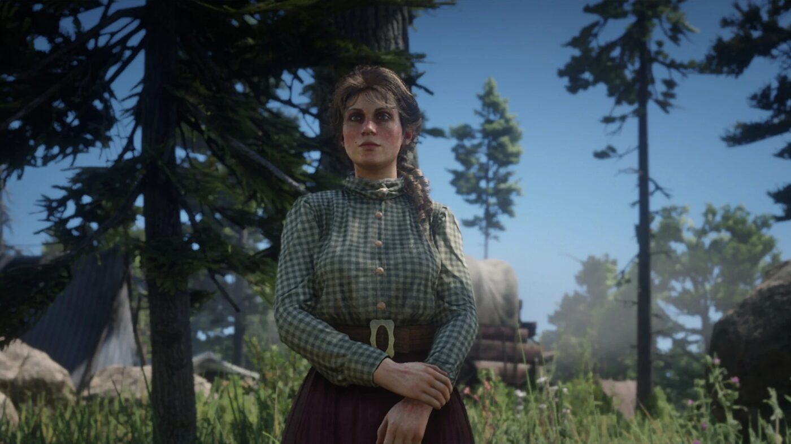

Character · Van der Linde gang
Mary-Beth Gaskill
Mary-Beth Gaskill is a pickpocket and thief in the Van der Linde gang in Red Dead Redemption 2, and the camp's bookworm, almost always found reading a romance novel. The gang took her in after rescuing her from the victims of her thieving.
She is one of the gentler members of the gang, and one of the few Arthur confides in.
- Affiliation
- Van der Linde gang
- Role
- Pickpocket and thief
- Status
- Alive (survives RDR2)
- Later
- Novelist ("Leslie Dupont")
- Games
- Red Dead Redemption 2
Biography
The camp bookworm
Mary-Beth finds the lead on the gang's lucrative train robbery, and helps Arthur and Sean rob a stagecoach in Chapter 3. She grows close to Kieran Duffy, and is the first to see his mutilated body when the O'Driscolls send it back to camp, begging Arthur to avenge him.
Arthur's confidante
At Beaver Hollow, Arthur tells Mary-Beth that he has tuberculosis; she is one of only two members he confides in, with Charles Smith. Her words of encouragement are among those Arthur can recall on his final ride. Dutch flirts with her and asks after her books.
Fate
Mary-Beth survives Red Dead Redemption 2. By 1907 she is a romance novelist writing under the pen name Leslie Dupont. John meets her at the Valentine train station, where she gives him a copy of her book, "The Lady of the Manor". She stays in close contact with Tilly Jackson.
Relationships

Kieran Duffy
The former O'Driscoll she grows close to, and whose death devastates her.

Arthur Morgan
The gang member she comforts, and one of the two people he tells about his illness.

Tilly Jackson
Her closest friend in the gang, and long after it.
Behind the scenes
Mary-Beth Gaskill appears in Red Dead Redemption 2 (2018). She is voiced by Samantha Strelitz.
Trivia
- She is one of only two members Arthur tells about his tuberculosis.
- Her novel is reported as a best-seller in an in-game newspaper.
- She tells Arthur he is the only one of the gang who knows how lost he is.
Gallery
